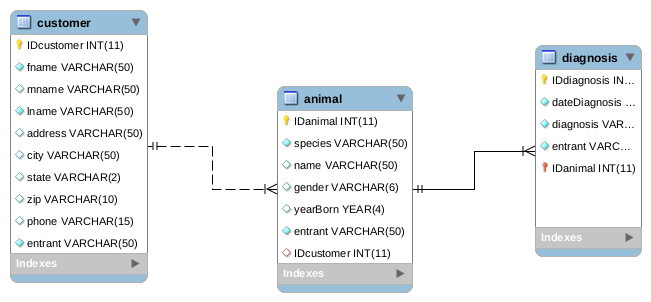

SELECT customer.lname, animal.species, diagnosis.diagnosis
FROM ((customer
INNER JOIN animal ON customer.IDcustomer = animal.IDcustomer)
INNER JOIN diagnosis ON animal.IDanimal = diagnosis.IDanimal);
SELECT customer.lname, animal.species, diagnosis.diagnosis
FROM ((customer
INNER JOIN animal ON customer.IDcustomer = animal.IDcustomer)
INNER JOIN diagnosis ON animal.IDanimal = diagnosis.IDanimal)
WHERE animal.species LIKE 'dog';
SELECT customer.lname, animal.species, diagnosis.diagnosis
FROM ((customer
INNER JOIN animal ON customer.IDcustomer = animal.IDcustomer)
INNER JOIN diagnosis ON animal.IDanimal = diagnosis.IDanimal)
WHERE animal.species LIKE 'dog' AND animal.gender LIKE 'f';
SELECT customer.lname, animal.species, diagnosis.diagnosis
FROM ((customer
INNER JOIN animal ON customer.IDcustomer = animal.IDcustomer)
INNER JOIN diagnosis ON animal.IDanimal = diagnosis.IDanimal)
WHERE diagnosis.diagnosis LIKE '%rabies%';
SELECT
customer.fname AS 'First Name',
customer.lname AS 'Last Name',
customer.state AS 'State',
animal.name AS 'Pet\'s Name',
animal.species,
animal.yearBorn,
animal.gender
FROM
customer
INNER JOIN
animal
ON
customer.IDcustomer = animal.IDcustomer
WHERE
customer.state LIKE 'id'
AND animal.gender LIKE 'f'
AND animal.yearBorn < 2008
AND animal.species LIKE 'cat'
OR animal.species LIKE 'dog'
AND animal.name LIKE 'f%'
AND animal.yearBorn < 2012
ORDER BY animal.species, animal.yearBorn DESC;
This is called an ERD or an entity-relationship diagram. This shows the relationship between the 3 tables in the database
